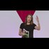

<!DOCTYPE html>
<html lang="en">
 <head>
<!-- Favicon -->
<link rel="shortcut icon" href="../../favicon.ico">
  <meta charset="utf-8"/>
  <title>
   From Child Sex Slavery to Victory - My Healing Journey | Anneke Lucas | TEDxKlagenfurt
  </title>
  <meta content="Post on /v/Pizzagate archived on 2017-07-21 by Konran." name="description"/>
  <meta content="From Child Sex Slavery to Victory - My Healing Journey | Anneke Lucas | TEDxKlagenfurt" property="og:title"/>
  <meta content="Post on /v/Pizzagate archived on 2017-07-21 by Konran." property="og:description"/>
  <link href="../../static/css/page.css" rel="stylesheet"/>
  <meta content="https://voat.pizzagate.hackliberty.org/thumbnails/94/44/9444b7cd-3409-48db-81d9-1ad6ff0934b9.jpg" property="og:image"/>
  <meta content="https://voat.pizzagate.hackliberty.org/v/pizzagate/2009721.html" property="og:url"/>
  <meta content="width=device-width, initial-scale=1" name="viewport"/>
  <link href="https://voat.pizzagate.hackliberty.org/2009721.html" rel="canonical"/>
  <meta content="article" property="og:type"/>
  <meta content="Voat /v/Pizzagate Archive" property="og:site_name"/>
  <meta content="en_US" property="og:locale"/>
  <meta content="summary_large_image" name="twitter:card"/>
  <meta content="From Child Sex Slavery to Victory - My Healing Journey | Anneke Lucas | TEDxKlagenfurt" name="twitter:title"/>
  <meta content="Post on /v/Pizzagate archived on 2017-07-21 by Konran." name="twitter:description"/>
  <meta content="https://voat.pizzagate.hackliberty.org/thumbnails/94/44/9444b7cd-3409-48db-81d9-1ad6ff0934b9.jpg" name="twitter:image"/>
 </head>
</html>
<body class="dark">
 <div id="container">
  <!-- array (
  'submissionid' => 2009721,
  'creationDate' => '2017-07-21 08:38:57',
  'domain' => 'youtube.com',
  'formattedContent' => NULL,
  'isAdult' => 0,
  'isAnonymized' => 0,
  'subverse' => 'pizzagate',
  'thumbnail' => '9444b7cd-3409-48db-81d9-1ad6ff0934b9.jpg',
  'title' => 'From Child Sex Slavery to Victory - My Healing Journey | Anneke Lucas | TEDxKlagenfurt',
  'url' => 'https://www.youtube.com/watch?v=tLp5LM18wIU',
  'userName' => 'Konran',
  'archivedLink' => NULL,
  'archivedDomain' => NULL,
  'isDeleted' => 0,
) -->
  <div style="text-align:center; font-size:24px; font-weight:bold;">
   <a href="../../index.html" style="text-decoration: none; color: inherit;">
    Voat /v/Pizzagate Archive
   </a>
  </div>
  <div class="content" role="main">
   <div class="sitetable linklisting" id="siteTable">
    <div class="submission id-2009721 link type-text" id="submission-2009721">
     <a name="submissionTop">
     </a>
     <p class="parent">
     </p>
     <a class="thumbnail may-blank" href="https://www.youtube.com/watch?v=tLp5LM18wIU" target="_self">
      
     </a>
     <div class="entry unvoted">
      <p class="title">
       <a class="title may-blank" href="https://www.youtube.com/watch?v=tLp5LM18wIU" tabindex="1" target="_self" title="From Child Sex Slavery to Victory - My Healing Journey | Anneke Lucas | TEDxKlagenfurt">
        From Child Sex Slavery to Victory - My Healing Journey | Anneke Lucas | TEDxKlagenfurt
       </a>
       <span class="domain">
        (
        <a href="https://archive.searchvoat.co/search.php?d=youtube.com">
         youtube.com
        </a>
        )
       </span>
      </p>
      <p class="tagline">
       submitted
       <time datetime="2017-07-21T08:38:57+00:00" title="07/21/2017 8:38:57 AM">
        2017-07-21T08:38:57
       </time>
       by
       <span class="userattrs">
        <a class="author may-blank" href="https://archive.searchvoat.co/search.php?u=Konran">
         Konran
        </a>
       </span>
      </p>
      <ul class="flat-list buttons">
       <li class="first">
        <a class="comments may-blank" href="https://archive.searchvoat.co/v/pizzagate/2009721" rel="nofollow">
         1 comment
        </a>
       </li>
      </ul>
     </div>
     <div class="child">
     </div>
     <div class="clearleft">
     </div>
    </div>
    <div class="clearleft">
    </div>
   </div>
   <div class="horizontal-line">
   </div>
   <div class="commentarea">
    <div class="sitetable nestedlisting" id="siteTable">
     <div class="child id-9921782 comment even" style="">
      <div class="entry unvoted">
       <div class="noncollapsed" id="9921782" style=";">
        <p class="tagline">
         <a class="author may-blank" href="https://archive.searchvoat.co/search.php?u=Konran">
          Konran
         </a>
         <span class="userattrs">
         </span>
         <time datetime="2017-07-22T12:36:44+00:00" title="7/22/2017 12:36:44 PM">
          2017-07-22T12:36:44
         </time>
        </p>
        <div class="usertext-body may-blank-within" id="commentContent-9921782">
         <div class="md">
          <p>
           <p>
            An interesting TEDx talk from a child sex slave survivor corroborating what many of us take to be the truth.  How elite figures take children to use and abuse as they see fit.  She also provides inspiration for us to continue trying to shine a light upon this particular darkness in society.
           </p>
          </p>
         </div>
        </div>
        <ul class="flat-list buttons">
         <li class="first">
          <a class="bylink" href="https://archive.searchvoat.co/v/pizzagate/2009721/9921782" rel="nofollow">
           link
          </a>
         </li>
        </ul>
       </div>
      </div>
     </div>
    </div>
   </div>
  </div>
 </div>
<!-- Footer Section -->
<footer class="container-fluid mt-3">
  <p class="small mb-0">
    /v/pizzagate archive has 40446 posts and 683312 total comments.
    <a href="https://git.hackliberty.org/c0mmando/voat-pizzagate-archive/">source code</a>.
  </p>
</footer>

<script src="../../static/js/jquery-3.7.1.slim.min.js"></script>
<script src="../../static/js/comments-toggle.js"></script>

</body>
